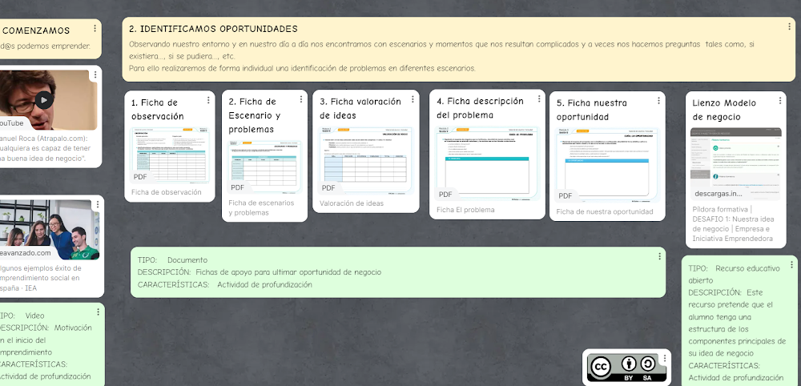
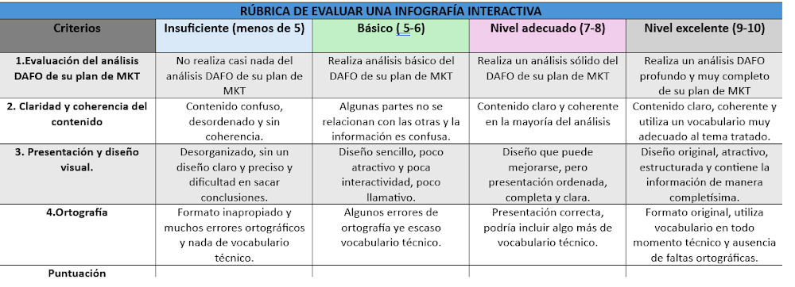

Actividad: Profundizamos en el mircro y macroentorno
Descripción:
En esta actividad queremos que cada grupo haga una investigación en profundidad del mercado. Lo que sucede en el micro y macroentorno de la empresa y finalmente que realicen una DAFO de dicho análisis. Cada grupo debe abrir bien los ojos y observar qué es lo que ocurre dentro y fuera de ella.
Con el análisis interno se detectan las debilidades y fortalezas de la empresa desde el punto de vista comercial y del marketing.
Con el análisis externo se descubren las oportunidades y amenazas a partir del entorno en general.
Agrupamientos: 2 grupos (3 personas/grupo)
Sesiones: 1 sesión.
Ayuda:
Observando el día a día nos encontramos con problemas y preguntas como si se pudiera, si existiera, etc, para ello aportamos un video que nos sirva para tener en cuenta lo dicho Agencia Atrápalo
En el panel que se adjunta seguiremos los pasos para observar el entorno y buscar solución a un problema.

Herramientas: internet, libros, revistas on line, Canva Genially, aplicaciones entorno 365.
Producto: ¿Qué se pide? Cada grupo deberá entregar una infografía interactiva con los resultados obtenidos en su DAFO (documento análisis), este será uno de los puntos del marketing que nos ayudará a plantear los objetivos del plan. Dicho análisis deberá entregarse en la tarea del grupo de Teams creada para dicho fin antes del 13 de abril de 2026.
Evaluación:
Se adjunta la rúbrica de la infografía interactiva:
